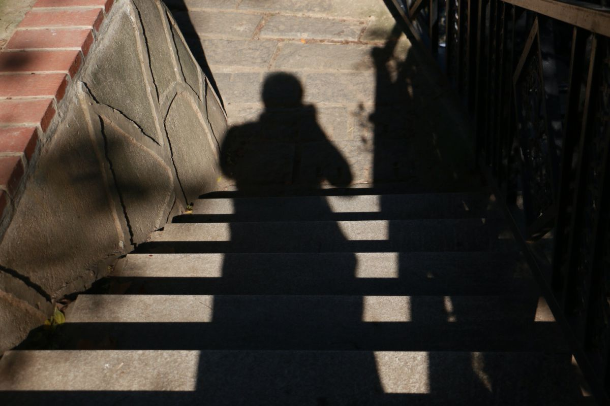

<!-- 光影街巷场景 -->
<div class="scene-b">
    
    <div class="text-container" id="sceneBText">
        <div class="text-backdrop">
            <p class="animated-text">光影交织的街巷</p>
            <p class="poem">阳光斜照，砖墙上的老门牌<br>诉说着百年的故事</p>
        </div>
    </div>
</div>

<style>
    /* 确保在单独打开文件时也有基本样式 */
    body {
        margin: 0;
        padding: 0;
        overflow: hidden;
        font-family: 'Ma Shan Zheng', 'Noto Serif SC', "PingFang SC", "Microsoft YaHei", serif;
        background: #000;
    }
    
    /* 展示B场景样式 - 光影街巷 */
    .scene-b {
        width: 100%;
        height: 100vh;
        position: relative;
        background: #000;
    }
    
    .scene-b .background-image {
        position: absolute;
        width: 100%;
        height: 100%;
        object-fit: cover;
        top: 0;
        left: 0;
        opacity: 0;
        transition: opacity 2s ease-in-out;
    }
    
    .scene-b .background-image.fade-in {
        opacity: 1;
    }
    
    .scene-b .text-container {
        position: absolute;
        bottom: 10%;
        right: 10%;
        z-index: 2;
        text-align: right;
        width: 80%;
        max-width: 500px;
        transform: translateY(50px);
        opacity: 0;
        transition: all 1.5s ease-out;
    }
    
    .scene-b .text-container.slide-up {
        transform: translateY(0);
        opacity: 1;
    }
    
    .scene-b .text-backdrop {
        background: rgba(255, 255, 255, 0.15);
        backdrop-filter: blur(8px);
        -webkit-backdrop-filter: blur(8px);
        border-radius: 15px;
        padding: 20px 30px;
        box-shadow: 0 4px 30px rgba(0, 0, 0, 0.1);
        display: inline-block;
    }
    
    .scene-b .animated-text {
        color: #fff;
        font-size: 2rem;
        line-height: 1.8;
        text-shadow: 2px 2px 4px rgba(0, 0, 0, 0.4);
        margin: 0;
        font-family: 'Ma Shan Zheng', cursive;
        letter-spacing: 0.1em;
    }
    
    .scene-b .poem {
        color: rgba(255, 255, 255, 0.9);
        font-size: 1.2rem;
        margin-top: 15px;
        line-height: 1.6;
    }
    
    @media (max-width: 768px) {
        .scene-b .animated-text {
            font-size: 1.6rem;
            letter-spacing: 0.05em;
        }
        .scene-b .text-container {
            width: 90%;
            right: 5%;
            bottom: 15%;
        }
        .scene-b .poem {
            font-size: 1rem;
        }
    }
</style>

<script>
    // 简化的初始化函数
    function initSceneB() {
        console.log('场景B初始化函数被调用');
        
        // 获取图片元素并添加淡入效果
        const img = document.querySelector('.scene-b .background-image');
        if (img) {
            img.classList.add('fade-in');
        }
        
        // 获取文本容器并添加滑入效果
        const text = document.querySelector('.scene-b .text-container');
        if (text) {
            setTimeout(() => {
                text.classList.add('slide-up');
            }, 1000);
        }
    }
    
    // 在单独打开页面时自动初始化
    document.addEventListener('DOMContentLoaded', function() {
        // 检查是否为顶级窗口（单独打开）或在iframe中（被首页引用）
        if (window.self === window.top) {
            console.log('单独打开scene_b.html，自动初始化');
            // 设置字体加载
            if (!document.getElementById('google-fonts')) {
                const link = document.createElement('link');
                link.id = 'google-fonts';
                link.rel = 'stylesheet';
                link.href = 'https://fonts.googleapis.com/css2?family=Ma+Shan+Zheng&family=Noto+Serif+SC:wght@400;700&display=swap';
                document.head.appendChild(link);
            }
            // 自动初始化动画
            initSceneB();
        } else {
            console.log('在iframe中加载scene_b.html，等待首页调用初始化');
        }
    });
</script> 